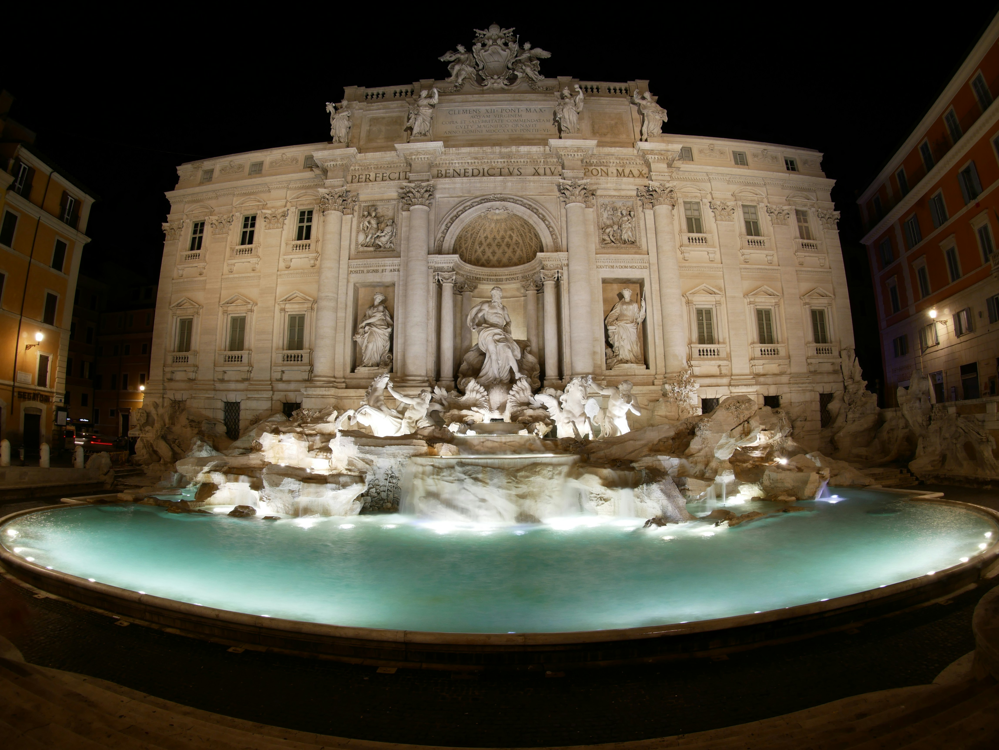

Rome
Rome, the Eternal City, is a place where ancient history, stunning architecture, and vibrant culture come together. Whether you're a history buff, a foodie, or simply a lover of all things beautiful, Rome offers something for everyone.
Top attractions
Colosseum
The Colosseum, a monumental amphitheater, is a symbol of Rome's imperial grandeur. This ancient arena once hosted gladiatorial contests and public spectacles, and it stands today as a testament to the engineering prowess of the Roman Empire. Walk through its vast corridors and imagine the roaring crowds of the past.
Roman Forum
Once the center of public life in ancient Rome, the Roman Forum is a sprawling ruin that gives insight into the city's rich history. Walk along the ancient cobblestones and explore the remnants of temples, basilicas, and government buildings that once formed the epicenter of Roman civilization.
Trevi Fountain
One of the most famous fountains in the world, the Trevi Fountain is a Baroque masterpiece that captivates visitors with its intricate sculptures and the legend of coin tossing. Tradition holds that tossing a coin into the fountain guarantees your return to Rome.
Neighborhoods to Explore
Trastevere
A charming neighborhood known for its cobblestone streets and vibrant nightlife, Trastevere offers a taste of authentic Roman life. Wander through its narrow alleys, enjoy a meal at a local trattoria, and experience the lively atmosphere of its piazzas. By day, it's a quiet, picturesque escape; by night, it transforms into a bustling hub of activity.
Testaccio
Once a working-class district, Testaccio is now a foodie paradise. Known for its traditional Roman cuisine, this neighborhood offers a more down-to-earth experience. Visit the local markets, indulge in a plate of pasta at a historic osteria, or explore the area's vibrant street art scene.
Monti
Monti is one of Rome’s oldest neighborhoods and has recently become a hipster haven. With its bohemian vibe, vintage boutiques, and quirky cafes, Monti is the perfect place to explore on foot. It’s a great spot for those looking to experience a blend of old and new Rome, away from the main tourist crowds.
Hidden Gems
Lesser-known sites and local favorites
Rome is full of hidden gems that offer a break from the more crowded tourist spots. Discover the Aventine Hill ; There is a keyhole view, offering a unique perspective of St. Peter’s Basilica.
Quartiere Coppedè
A whimsical neighborhood known for its eclectic architecture.
Basilica di San Clemente
You can descend through layers of history, from a 12th-century basilica to a 4th-century church, and even further down to a 2nd-century pagan temple.
Villa Doria Pamphili
Rome’s largest landscaped public park, perfect for a relaxing afternoon away from the hustle and bustle.